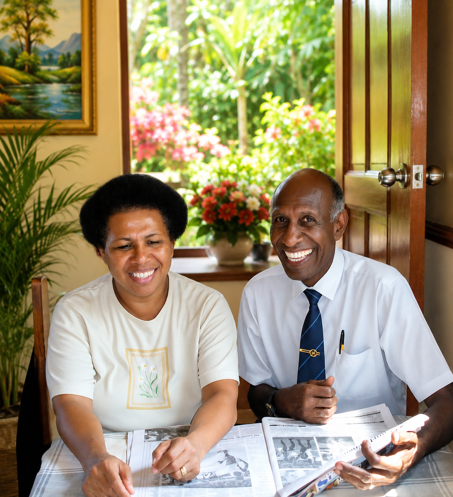
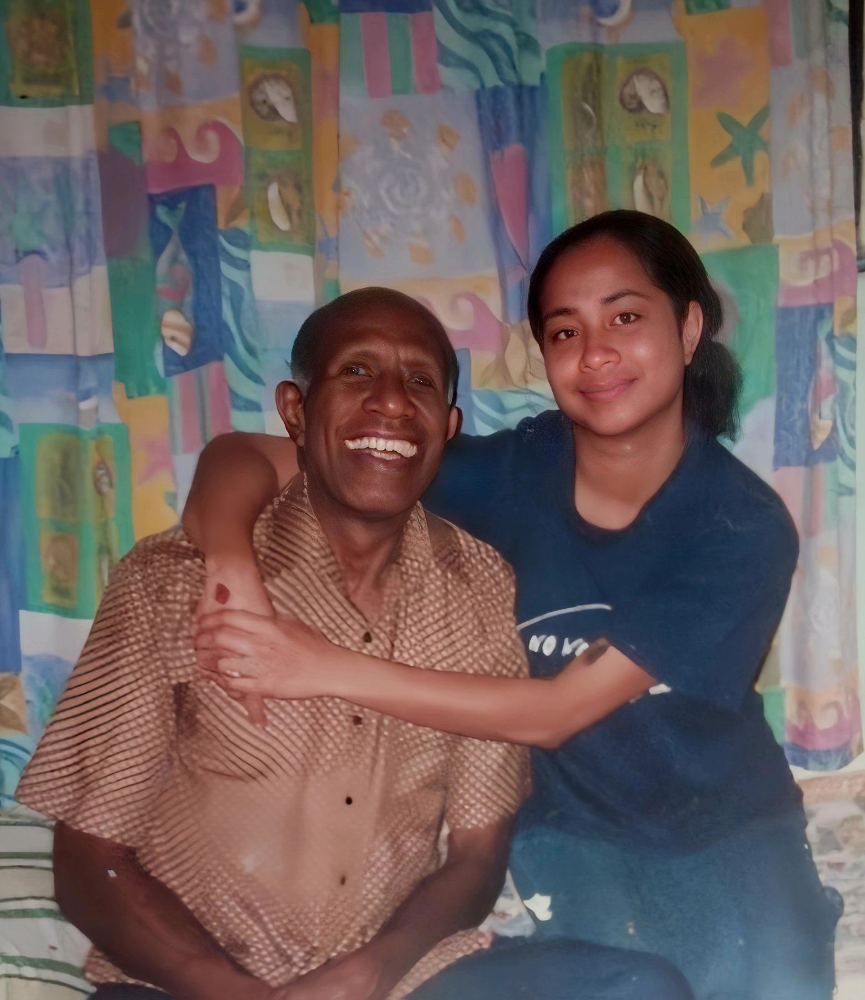

Life & Legacy
Forever In Our Hearts
Joe’s story lives on through the people he loved, the sport he served, and the memories shared by family and friends. His smile, humility and strength remain a blessing to all who knew him.
Family Man
Fiji Representative
Community Role Model

